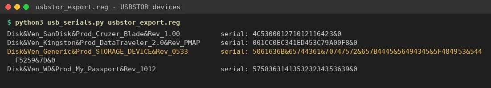
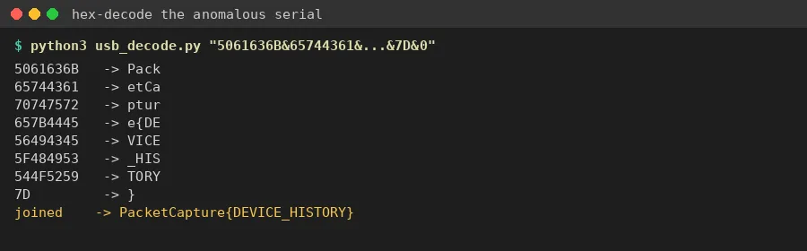

01Start point: usbstor_export.reg.
- What I found: an export of HKLM\SYSTEM\CurrentControlSet\Enum\USBSTOR with four USB storage devices: a SanDisk Cruzer Blade, a Kingston DataTraveler 2.0, a "Generic STORAGE_DEVICE" and a WD My Passport.
- Thinking: the brief says "most entries look exactly like what you'd expect. One doesn't." Each USBSTOR subkey is "Disk&Ven_<vendor>&Prod_<product>&Rev_<rev>\<serial>&0", so I compared the serial numbers.

02Pivot: the anomalous serial.
- What I found: the Generic device's serial is 5061636B&65744361&70747572&657B4445&56494345&5F484953&544F5259&7D&0
- Thinking: real serials are one continuous string. This one is split into 8-character chunks by "&", and every chunk is valid hex. It starts with 50 61 63 6B, which is "Pack" in ASCII. A comment in the export also flags it: "serial number does not match any known vendor format".
03Decoding.
- What I did: removed the "&" separators and the trailing "&0" instance suffix, then hex-decoded the rest.
- Result: Pack | etCa | ptur | e{DE | VICE | _HIS | TORY | } = PacketCapture{DEVICE_HISTORY}
